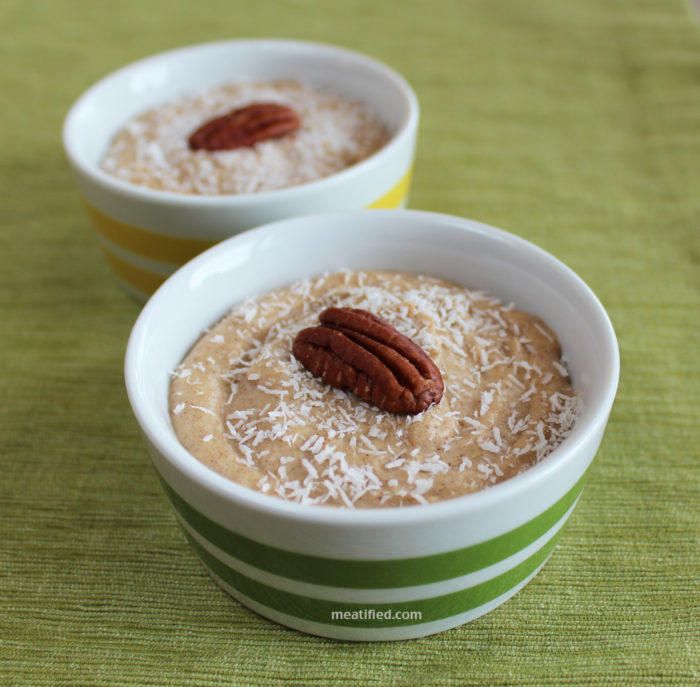

plantain pudding

A sweet coconut, cinnamon, and plantain pudding
Chucula is a delicious creamy dessert from Ecuador. It is made from ripe plantains, milk, cinnamon and vanilla.
It can be served as a warm or cold smoothie or as a slightly thicker pudding with ricotta cheese.
Ingredients:
- 1 lb ripe (yellow with plenty of black spots) plantains (about 2), peeled and sliced
- 1/2 cup coconut cream
- 1 tsp ground cinnamon
- Pinch of fine sea salt
FOR GARNISHING:
- Whipped coconut cream
- Unsweetened coconut or my favorite caramel sea salt coconut chips
Instructions:
- Add the sliced plantains to a mini food processor & process to a puree, about 1 minute.
- Add the coconut cream and cinnamon to the processor after scraping down the sides.
- Blend for another minute or so until the mixture is smooth.
- Divide the pudding between four 4 oz ramekins. Divide the unsweetened coconut between the dishes and top each with a pecan half before serving.
- Can be eaten immediately, or kept in the freezer for an hour or two after making for more of a “soft serve” texture.